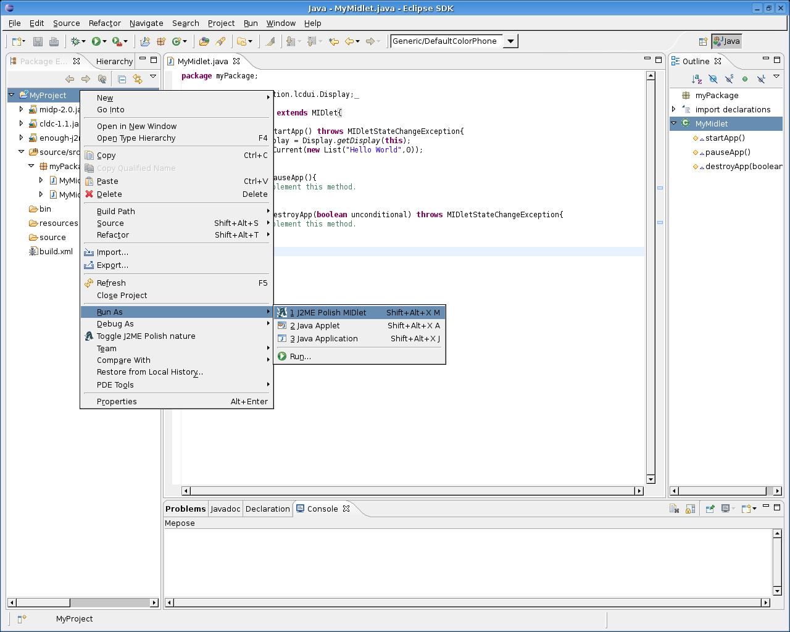

<%define inDocumentationSection %>
<%define inDocumentationSection.mepose %>
<%set title = J2ME Polish: Mepose %>
<%set basedir = ../ %>
<%include start.txt %>
	
	<div id="content">

<h1 id="top">Running and Debugging a J2ME Polish Project</h1>

<p>
Open a midlet with the J2ME Polish Editor.
</p>


<p>
Choose a target device with the drop down box in the upper left hand side. Then set a breakpoint in the code. (v0.6.x: left-clicking the margin does not work. Use right-click and "Toogle Breakpoint" instead.)
</p>


<p>
Choose "Run As.../J2ME Polish MIDlet".
</p>



<p>
Now the emulator is starting up and the debugger is connected. If the running midlet hits the breakpoint the source in question is displayed.
</p>

<%include end.txt %>